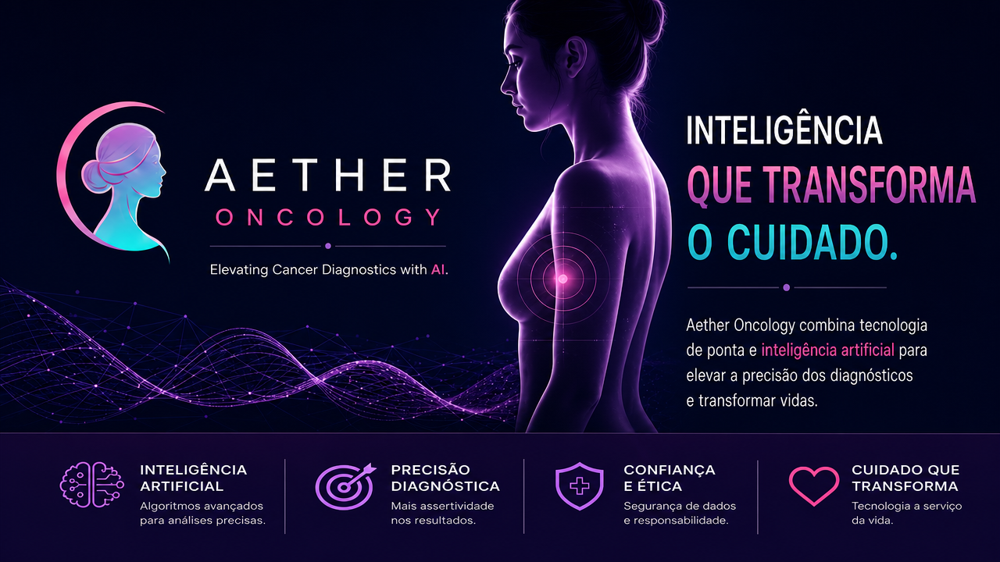

Incerteza Bayesiana
Quantificação rigorosa de confiança em cada predição genômica, reduzindo falsos positivos em 34% vs modelos determinísticos tradicionais.
Inteligência Artificial explicável e biologia computacional de elite, transformando biomarcadores complexos em decisões clínicas de alta fidelidade.

Quantificação rigorosa de confiança em cada predição genômica, reduzindo falsos positivos em 34% vs modelos determinísticos tradicionais.
Conexão em tempo real com PubMed e ClinVar para validação.
Execução local via ONNX Runtime para segurança máxima de dados sensíveis.
Monitoramento contínuo de population shift.
Redes neurais convolucionais monitoram biomarcadores e padrões tumorais continuamente. O sistema correlaciona dados genômicos, laboratoriais e de imagem para geração de hipóteses diagnósticas com fundamentação científica automática.
Não entregamos apenas um diagnóstico — entregamos o raciocínio completo. Mapas de calor SHAP e LIME integrados ao fluxo de trabalho clínico permitem que oncologistas validem e contestem cada predição da IA.
Cada hipótese diagnóstica é validada automaticamente contra as publicações mais recentes.
Estudo multicêntrico demonstra redução de 23% em diagnósticos tardios utilizando modelos Bayesianos com incerteza quantificada.
Aether Oncology apresenta correlação de 0.98 com biópsias tradicionais em coorte de 3.200 pacientes brasileiros.
Sistemas com explicabilidade nativa aumentam a confiança do clínico em 67% e reduzem o tempo de decisão em 41%.
Nossa missão é salvar vidas sem comprometer o planeta. Modelos quantizados INT8, pruning estrutural e execução edge eliminam computação desnecessária em cada inferência.
Relatório de SustentabilidadeJunte-se a 120+ hospitais e clínicas que confiam no Aether Oncology para diagnósticos de precisão.
Sem necessidade de cartão de crédito. Setup em 15 minutos.